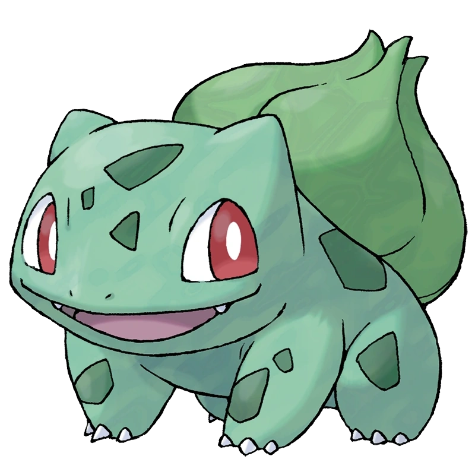
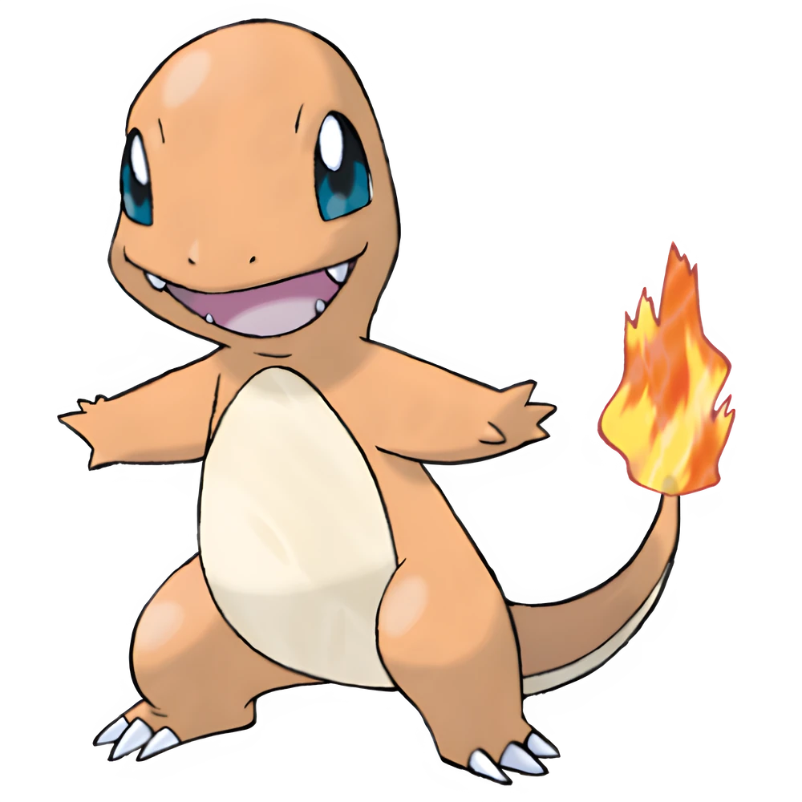
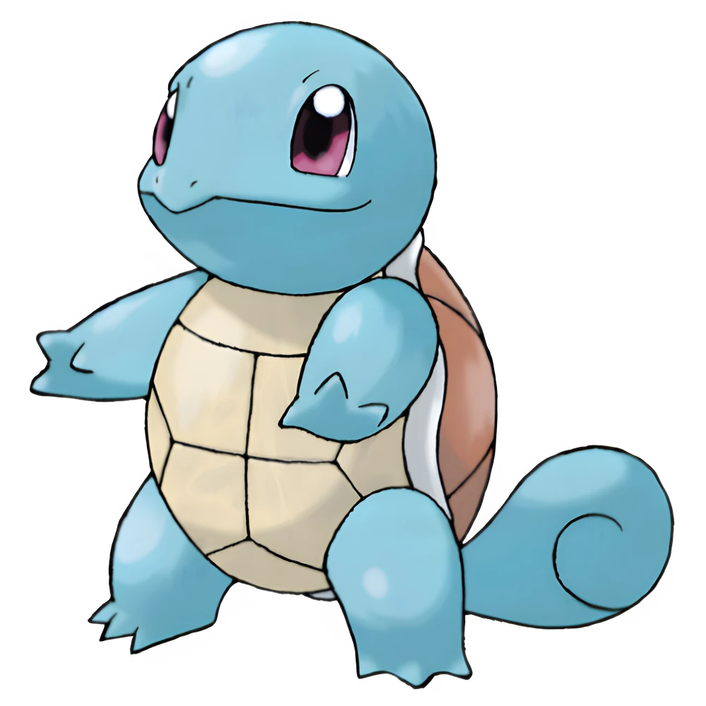

Introdução
Pokémon surgiu em 1996, criado por Satoshi Tajiri e desenvolvido pela Game Freak em parceria com a Nintendo. Inspirado na infância de Tajiri colecionando insetos, Pokémon rapidamente virou um fenômeno com seus primeiros jogos (Pokémon Red e Green) para Game Boy, inovando com a troca de monstros via cabo link. Logo expandiu para anime, filmes, cartas e brinquedos, consolidando-se como uma das maiores franquias de mídia do mundo. Com mais de 1.000 criaturas e vários jogos e regiões, Pokémon continua conquistando gerações, inclusive com fenômenos modernos como Pokémon GO.
1ª Geração
A primeira geração de pokemon contou com um total de 151 pokemon, entre eles os 3 iniciais:
- Bulbassauro
- Charmander
- Squirtle
- 
- 
- 
Escolha dos Jogadores
Mesmo com os 3 inciciais sendo muito bons, tem um que foi mais escolhido. Abaixo segue o ranking dos inicais mais escolhidos da 1ª geração:
- Charmander (com 53% das escolhas)
- Squirtle (com 27% das escolhas)
- Bulbassauro (com 20% das escolhas)
Escolha seu inicial
Agora que você conhece os inicias da região de Kanto escolha o seu: